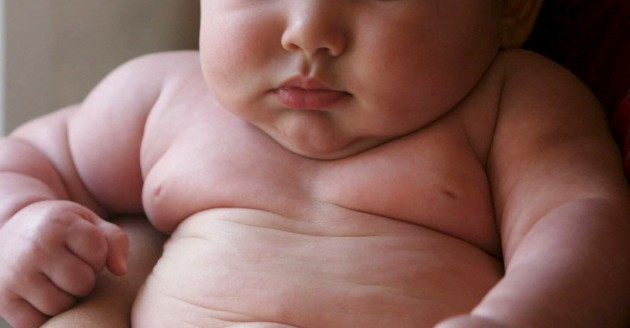
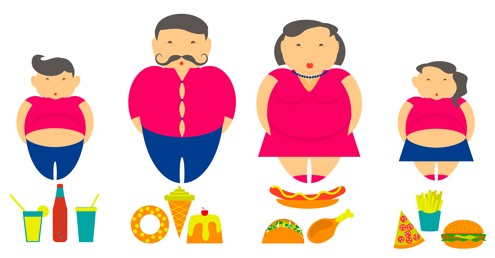

Índice
- Planteamiento del problema
- Importancia
- ¿Qué es la obesidad infantil?
- Objetivos especificos
- Video de despedida
Planteamiento
La obesidad es un padecimiento que hoy en día, está tan arraigado en nuestra sociedad que ni siquiera es considerado, por algunas personas, como un trastorno alimenticio. Estas malas costumbres se han anexado a los comportamientos de niños y niñas de nuestro país, provocando un aumento de padecimientos relacionados con la obesidad. Actualmente, en México, uno de cada veinte niños y niñas menores de cinco años y uno de cada tres entre los seis y diecinueve años, padecen sobrepeso y obesidad; debido a esto, México se encuentra en los primeros lugares de obesidad infantil en el mundo. Según la Encuesta Nacional de Niños, Niñas y Mujeres, el 48% de los niños y niñas menores de 2 años había consumido bebidas azucaradas en el día anterior de la encuesta.
En cuanto a tratamientos de la obesidad en niños, aunque existen muchos para la obesidad infantil, ningún tratamiento funciona por sí solo. Se deben hacer cambios en la alimentación y las actividades que hace toda la familia. Según la British United Provident Association Limited (BUPA).
Importancia
¿Qué es la obesidad infantil?
La obesidad infantil es una afección de salud grave que afecta a niños y adolescentes. Es particularmente problemática porque el sobrepeso a menudo genera que el niño comience a padecer problemas de salud que antes se consideraban problemas de adultos, como la diabetes, la presión arterial alta y el colesterol alto. La obesidad infantil también puede generar baja autoestima y depresión.
Objetivos
- Concientizar desde una temprana edad, acerca de las consecuencias que tiene la obesidad y el sobrepeso.
- Demostrar que el actual uso del dispositivo móvil, puede ser aprovechado para educar desde una edad temprana.
- Motivar a nuestros usuarios a tener un estilo de vida más saludable.
- Registrar los cambios producidos con nuestra aplicación y comparar los resultados con distintos periodos de tiempo.
- Disminuir la cantidad de personas que padecen de alguna enfermedad cardiovascular, crónico-degenerativa, osteomuscular, etc… consecuencias de la obesidad y el sobrepeso.